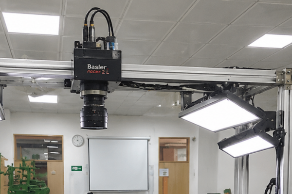

Making Textile Manufacturing Smarter, Connected, and More Efficient.
"AutoTaskX connects textile factory operations, machines, laboratory activities, and business systems in one platform."

What Problems Do Textile Factories Face Today?
Textile manufacturing generates continuous activity, but most factories struggle with disconnected information and delayed decisions.
Manual Work
Many laboratory and production activities still require repetitive manual work, paper notebooks, and handwritten calculations.
Disconnected Machines
Dyeing jets, stenters, and knitting frames operate independently. There is no central screen to monitor them together.
Missing Information
Sensor readings, inspection photographs, and batch logs are stored across different computers, clipboards, or forgotten.
Delayed Decisions
Factory managers only discover fabric defects or machine overheating hours after thousands of meters have already been damaged.
Paper clipboards · Disconnected machines · Walk-the-floor monitoring · Delayed defect discovery
Digital recipe calculations · Live sensor telemetry · Central web dashboard · Instant real-time alerts
One Platform to Connect the Entire Factory.
AutoTaskX connects laboratory chemistry, visual inspection, physical machines, and enterprise business software into one unified ecosystem.
Color Formulation
Helps calculate and manage dye recipes accurately for cotton, polyester, and blended fabrics.

Visual Quality Inspection
Helps capture and review fabric quality using industrial cameras or operator smartphones.

Production Intelligence
Helps monitor production performance, running speed, chamber temperature, and efficiency.

Textile OS
Connects physical machines, sensors, and meters to the AutoTaskX software platform.

ERP Integration
Connects factory operations with existing business software like SAP, Datatex, and Infor.

From the Factory Floor to One Digital Dashboard.
How physical activity on the mill floor turns into clear, actionable information on a manager's screen in 6 simple steps.
Physical Machines
Dyeing jets, stenter frames, and inspection machines running on the factory floor.
Sensors & Cameras
Temperature probes, pressure sensors, and cameras measure physical conditions continuously.
Connection System
An industrial IoT gateway collects sensor signals and sends them over the factory network.
AutoTaskX Platform
Backend software validates, organizes, and processes every incoming reading in milliseconds.
Database Storage
Readings are permanently stored for historical trends, compliance, and shift reports.
Live Dashboard
Managers and operators view real-time readings, machine status, and alerts on any device.
Every reading travels from the machine to the screen in under 25 milliseconds — eliminating clipboard paperwork and giving managers instant visibility.
Calculate and Manage Dye Recipes More Easily.
A clear, step-by-step workflow that replaces manual paper calculations with computational recipe assistance.
| Dye / Chemical | Concentration | Total Amount |
|---|---|---|
| Reactive Navy Blue 222 | 18.5 g/kg | 1,850 g |
| Reactive Red 195 | 4.2 g/kg | 420 g |
| Glauber's Salt (Na2SO4) | 50.0 g/kg | 5,000 g |
| Soda Ash (Na2CO3) | 15.0 g/kg | 1,500 g |
Formulation results are computational estimates. Actual dye recipes require appropriate laboratory beaker trials and spectrophotometer validation before bulk production.
Inspect Fabric Using Industrial Cameras or Smartphones.
Capture high-resolution fabric images during production to identify and classify defects before finished rolls ship to customers.

Industrial Line-Scan Camera
Basler racer 2 L – r2L16384-60cc
Installed directly above the fabric inspection gantry. Continuously captures high-speed 16,384-pixel line frames as fabric rolls move at factory speeds.
High-Volume Roll InspectionSmartphone Inspection
Textile OS Mobile Web App
Floor operators can use a connected smartphone or tablet to take clear photos of suspected fabric sections during manual table spot checks.
Fast On-the-Floor AuditsKnow What Is Happening Inside Your Factory.
Track machine running status, temperature, pressure, and line speed so you can prevent problems before they cause costly downtime.
1. Machine Running: Stenter Frame #02 is drying and heat-setting a 100% cotton knit batch.
2. Continuous Measurement: Temperature sensors continuously measure heat inside all 8 heating chambers.
3. Live Display: AutoTaskX displays the current temperature (185.5°C) and historical curve on screen.
4. Automatic Protection: If temperature exceeds the 190.0°C limit, the system instantly triggers an alert to prevent fabric yellowing or burning.
Connect Your Physical Factory to AutoTaskX.
Textile OS acts as the digital bridge connecting physical machines, sensors, and factory instruments directly to our software platform.
Mount the sensor securely on the machine (e.g. heating chamber or liquor pipe).
Connect the sensor wire to an industrial edge gateway computer mounted nearby.
The gateway reads the physical electrical signal and converts it into a digital number.
The gateway transmits the reading over the factory Wi-Fi or Ethernet network.
AutoTaskX saves the number permanently and updates the live web dashboard.
Let's Follow One Sensor.
Follow exactly how a single temperature reading travels from a hot machine chamber to a manager's screen in 20 milliseconds.
Stenter Machine
Chamber 4 heating cotton fabric
PT100 Sensor
Detects electrical resistance
IoT Gateway
Converts signal to digital data
Factory Network
Sent securely over Wi-Fi / LAN
AutoTaskX
Stored in TimescaleDB database
Live Screen
Manager sees green status live
"When a stenter machine is running, its temperature probe measures 185.5°C. A small gateway computer on the machine panel reads that value, turns it into a simple message, and sends it over the factory network. AutoTaskX receives it, saves it in the database, and displays it on the live dashboard. The whole trip takes less than 25 milliseconds."
How Do Machines Send Information to AutoTaskX?
Understanding MQTT through a simple real-world analogy: A high-speed digital post office.
The Digital Post Office Analogy
"Imagine 50 machines on a factory floor sending quick telegrams to one central post office (EMQX Messaging Server). The post office receives each telegram and instantly delivers it to the exact department that needs it — without any machine waiting in line."
MQTT is for Small Sensor Readings
Machine status, temperature numbers, pressure readings, and on/off signals are tiny (under 1 KB). MQTT handles thousands of these every second without slowing down.
Large Photos Never Use MQTT
Fabric inspection photographs (10 MB – 50 MB) are large files. They are uploaded separately through the web application directly to Cloud Storage (AWS S3) so sensor traffic stays lightning fast.
Every Type of Information Has Its Own Storage.
Different kinds of factory data need different storage containers to stay fast, organized, and reliable.
PostgreSQL Database
Permanent home for user profiles, machine lists, factory settings, chemical dye recipes, and quality inspection tickets.
"Batch #CTX-402 was dyed with Navy Recipe #12 by Operator Karim on Fong's Jet #03."
TimescaleDB Database
Specialized time-series database designed to store millions of continuous readings: temperature, pressure, motor speed, and power.
"Stenter #02 was 184.2°C at 10:00:01 AM, 185.0°C at 10:00:02 AM, and 185.5°C at 10:00:03 AM."
AWS S3 Cloud Storage
Secure cloud object storage built to hold heavy files like high-resolution 16K inspection scans and operator smartphone photos.
"A 25 MB high-resolution fabric roll scan is stored safely in S3; PostgreSQL saves the web link."
When an operator clicks on a defect, PostgreSQL loads the ticket details, AWS S3 shows the high-resolution photo, and TimescaleDB shows the exact machine temperature when that defect occurred.
From a Physical Reading to a Live Dashboard.
How AutoTaskX shows what is happening right now this second, while keeping a permanent historical record of earlier shifts.
[2026-11-23 10:42:18, 185.5°C].
Used by floor operators to catch overheating, machine jams, and speed drops before damage happens.
Used by factory managers to compare shift performance, evaluate energy efficiency, and audit quality.
AutoTaskX Works With Your Existing Business Software.
Factories do not need to replace their existing accounting or ERP software. AutoTaskX connects the physical shopfloor directly to your business system.
Enterprise ERP
Where management handles customer sales orders, financial accounting, and raw material inventory purchases.
AutoTaskX Platform
Where operators run machines, mix chemical recipes, inspect fabric rolls, and monitor live sensors.
Operators write output on clipboards; clerks manually type them into ERP 2 days later with errors.
Inventory is updated and orders are marked completed the moment the fabric roll leaves the machine.
How Everything Works Together.
The complete journey connecting laboratory chemistry, fabric inspection, shopfloor machines, and enterprise business systems.
One Place to Understand the Entire Factory.
Instead of checking multiple machines and separate paper records, factory leaders see complete operational reality from one clean screen.
Check running machines, floor speed, and production progress from a phone or laptop.
Stop overheating and fabric defects before thousands of meters are ruined.
Know exact dye grams and electricity consumed per kilogram of finished fabric.
Production output and inventory synchronize automatically with accounting software.
Where Can AutoTaskX Go Next?
A realistic, phased roadmap for expanding factory intelligence step by step as mill operations mature.
Connect More Machines
Expand IoT gateway connections to older legacy looms, winding frames, and auxiliary pumps.
Automated Inspection
Train computer vision models to automatically detect and flag subtle weaving slubs and needle lines.
Historical Analytics
Analyze months of historical recipe and temperature data to find ideal running speeds for every fabric weight.
Predictive Maintenance
Warn maintenance engineers before a motor bearing fails or a heating element burns out.
Autonomous Adjustments
Allow AutoTaskX to adjust machine line speed or chemical dispensary dosing in closed-loop control.
Connecting Every Part of Textile Manufacturing.
"AutoTaskX transforms disconnected factory operations into one connected industrial intelligence platform."
Sheikh Shamiul Shakib
Software Engineer · BUTEX Alumnus